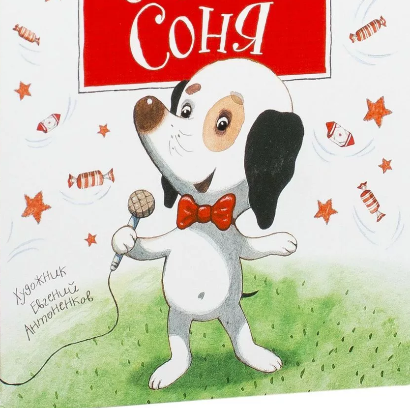

Умная собачка Соня
Андрей Усачев
Королевская дворняжка
В одном городе, на одной улице, в одном доме, в квартире № 66 жила-была маленькая, но очень умная собачка Соня.
У Сони были черные блестящие глаза и длинные, как у принцессы, ресницы и еще аккуратный хвостик, которым она обмахивалась как веером.
А еще у нее был хозяин, которого звали Иван Иваныч Королёв.
Поэтому живший в соседней квартире поэт Тим Собакин и прозвал ее королевской дворняжкой.
А остальные подумали, что это такая порода.
И собачка Соня тоже так подумала.
И другие собаки так подумали.
И даже Иван Иваныч Королев тоже так подумал. Хотя знал свою фамилию лучше остальных.
Каждый день Иван Иваныч уходил на работу, а собачка Соня сидела одна в своей шестьдесят шестой королевской квартире и ужасно скучала.
Наверное поэтому с ней и случались всякие интересные вещи.
Ведь когда становится очень скучно, всегда хочется сделать что-нибудь интересное.
А когда хочешь сделать что-нибудь интересное, что-нибудь обязательно да получится.
А когда что-нибудь получается, всегда начинаешь думать: как же это получилось?
А когда начинаешь думать, почему-то становишься умнее.
А почему — никому не известно.
Поэтому собачка Соня и была очень умной собачкой
Кто сделал лужу?
Когда маленькая собачка Соня еще не была умной собачкой Соней, а была маленьким умным щенком, она часто писала в коридоре.
Хозяин Иван Иваныч очень сердился, тыкал Соню носом в лужу и говорил:
— Кто сделал лужу? Это кто сделал лужу? Воспитанные собаки, — добавлял он при этом, — должны терпеть и не делать луж в квартире!
Собачке Соне это, конечно, ужасно не нравилось. И вместо того чтобы терпеть, она старалась незаметно делать это дело на ковре, потому что на ковре луж не остаётся.
Но однажды они вышли гулять на улицу, и маленькая Соня увидела перед подъездом огромную лужу.
«Кто сделал такую огромную лужу?» — удивилась Соня.
А за ней она увидела вторую лужу, еще больше первой. А за ней третью…
«Это, наверное, слон! — догадалась умная собачка Соня. — Сколько же он терпел!» — подумала она с уважением…
И с тех пор перестала писать в квартире.
«Здравствуйте, спасибо и до свидания!»
Как-то на лестнице маленькую собачку Соню остановила пожилая незнакомая такса.
— Все воспитанные собачки, — строго сказала такса, — при встрече должны здороваться. Здороваться — это значит говорить «здравствуйте», «привет» или «добрый день» — и вилять хвостиком!
— Здравствуйте! — сказала Соня, которой, конечно, очень хотелось быть воспитанной собачкой, и, вильнув хвостиком, побежала дальше.
Но не успела она добежать и до середины таксы, оказавшейся невероятно длинной, как её снова окликнули.
— Все воспитанные собачки, — произнесла такса, — должны быть вежливыми и, если им дают косточку, конфетку или полезный совет, говорить «спасибо»!
— Спасибо! — сказала Соня, которой, конечно же, очень хотелось быть вежливой и воспитанной собачкой, и побежала дальше.
Но только она добежала до таксиного хвоста, как сзади послышалось:
— Все воспитанные собачки должны знать правила хорошего тона и при прощании говорить «до свидания»!
— До свидания! — крикнула Соня и, довольная тем, что знает теперь правила хорошего тона, бросилась догонять хозяина.
С этого дня собачка Соня стала ужасно вежливой и, пробегая мимо незнакомых собак, всегда говорила:
— Здравствуйте, спасибо и до свидания!
Жаль, что собаки ей попадались самые обыкновенные. И многие кончались раньше, чем она успевала всё сказать.
Что лучше?
Собачка Соня сидела возле детской площадки и думала, что лучше — быть большой или маленькой?…
«С одной стороны, — думала собачка Соня, — большой быть значительно лучше: и кошки тебя боятся, и собаки тебя боятся, и даже прохожие тебя опасаются… Но с другой стороны, — думала Соня, — маленькой тоже быть лучше, потому что никто тебя не боится и не опасается и все с тобой играют. А если ты большой, тебя обязательно водят на поводке и надевают на тебя намордник…»
Как раз в это время мимо площадки проходил огромный и злющий бульдог Макс.
— Скажите, — вежливо спросила его Соня, — а это очень неприятно, когда на вас надевают намордник?
Макса этот вопрос почему-то страшно разозлил. Он зарычал, рванулся с поводка и, опрокинув хозяйку, погнался за Соней.
«Ой-ой-ой! — думала собачка Соня, слыша за спиной грозное сопение. Всё-таки большой быть лучше!…»
К счастью, по дороге им встретился детский сад. Соня увидела дыру в заборе и быстро юркнула в неё.
Бульдог же никак не мог пролезть в дыру — и только громко пыхтел с той стороны как паровоз…
«Всё-таки хорошо быть маленькой, — подумала собачка Соня. — Если бы я была большой, я бы ни за что не проскочила в такую маленькую щель…
Но если бы я была большой, — подумала она, — зачем бы я вообще полезла сюда?…»
Но так как Соня была маленькой собачкой, то она всё-таки решила, что лучше быть маленькой.
А большие собаки пусть решают сами!
Как Соня научилась разговаривать
Как-то собачка Соня сидела у телевизора, смотрела свою любимую передачу «В мире животных» и думала.
«Интересно, — думала она, — почему люди умеют разговаривать, а животные — нет?»
И вдруг ее осенило!
«А ведь телевизор тоже разговаривает, — подумала Соня, — когда его включают в розетку… Значит, — подумала умная Соня, — если меня включить в розетку, я тоже научусь разговаривать!»
Взяла собачка Соня и сунула хвост в розетку. А там кто-то как вцепится в него зубами!
— Ай-ай-ай! — закричала Соня. — Отпустите! Больно! — И, выдернув хвост, отскочила от розетки.
Тут из кухни прибежал удивлённый хозяин.
— Ну и ну! — сказал он. И погладив дрожащую Соню, добавил: Глупенькая, ведь там же электрический ток. Будь осторожней!
«Интересно, какой он из себя, этот электрический ток? — думала собачка Соня, с опаской поглядывая на розетку. — Маленький, а какой злой… Хорошо бы его приручить!»
Она принесла из кухни косточку и положила ее перед розеткой.
«Может быть, он не ест косточек или не хочет, чтобы его видели?» подумала Соня.
Она положила рядом с косточкой шоколадную конфетку и ушла гулять. Но когда она вернулась, все оказалось нетронутым.
«Этот электрический ток не ест вкусных косточек!… Этот электрический ток не ест шоколадных конфеток!… Странный он какой-то!!!» — подумала умная собачка Соня.
И с этого дня решила держаться от розетки подальше.
Продолжение следует